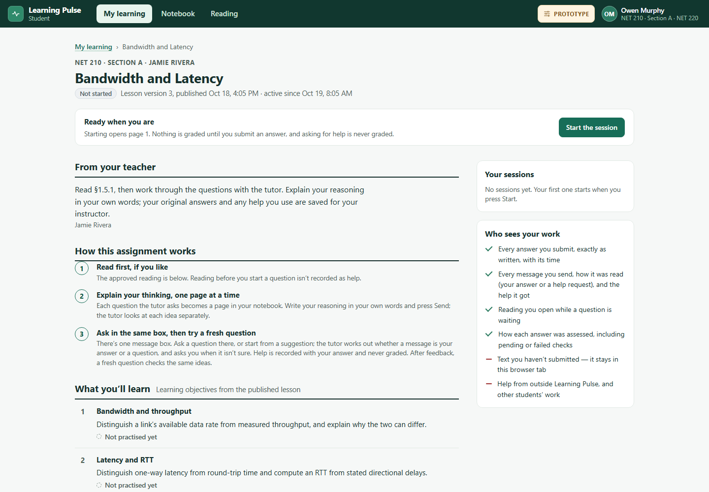
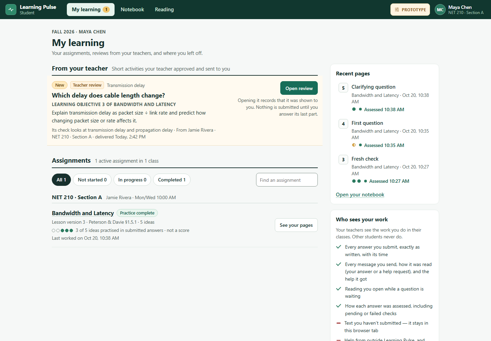
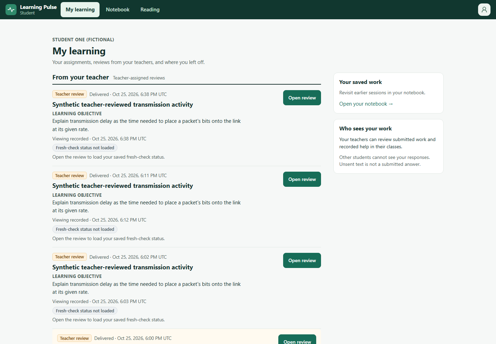
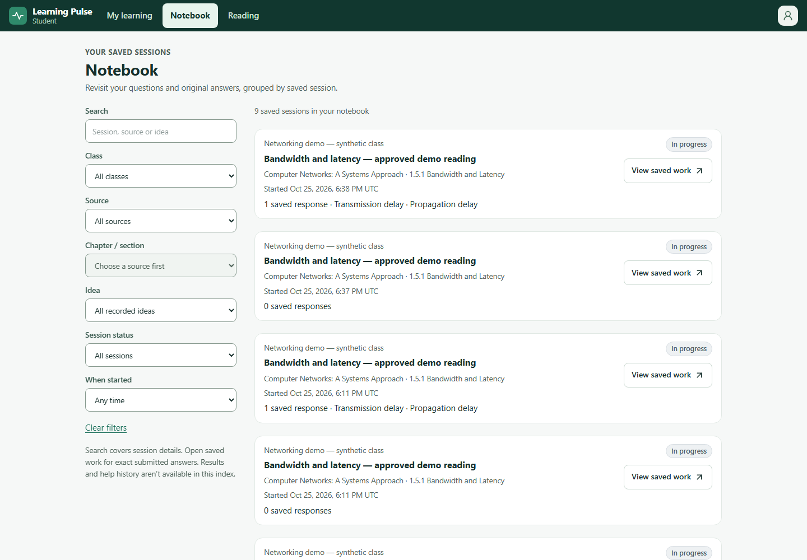

Assignment overview · 1440x1000
Mounted N1/N2; approved objectives and available current data remain authoritative.


Full visual acceptance: not complete. Viewport, overflow and zoom assertions are functional layout checks, not prototype fidelity acceptance. Active-study presentation remains gated and current-data records cannot reproduce the prototype's full chronology.
Exact reference ZIP fa69c2d0. External prototype fonts blocked; screenshots use available local fallback fonts. Authenticated fictional application data; disabled providers and zero paid calls. Each pair compares the same destination. Differences in authorized content and unavailable chronology are identified separately from layout defects.
Source 56f70ef4f52b38f39b4c384b0da21ede158eb74c; working diff SHA-256 e3b0c44298fc1c149afbf4c8996fb92427ae41e4649b934ca495991b7852b855. Native zoom mechanics: UNRUN. Raw results and defects.
Mounted N1/N2/N5; factual assignment/review content differs from prototype fixtures.


Mounted N1/N2; approved objectives and available current data remain authoritative.

Global Notebook index compared with the same prototype destination. Current-data cards and supported session filters only; per-answer results, help and chronology remain unavailable.

